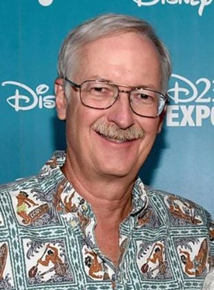
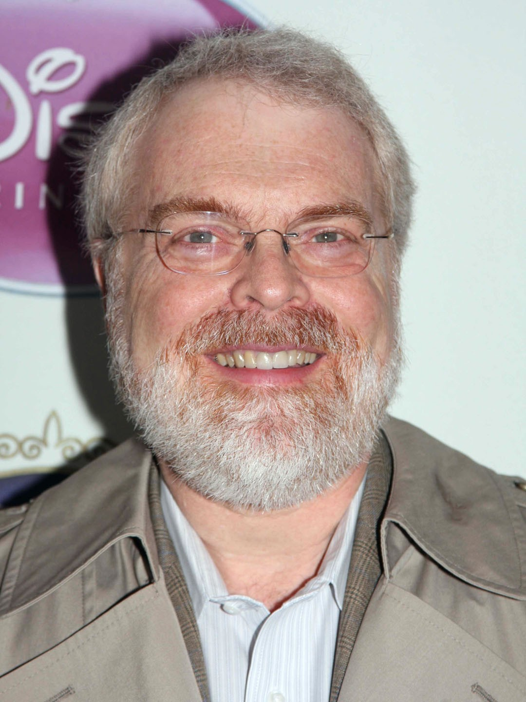

Trabalhadora e ambiciosa, Tiana sonha um dia abrir o seu próprio restaurante em Nova Orleans.
Seus planos tomam um rumo diferente quando ela conhece o príncipe Naveen, que foi transformado em sapo pelo maldoso Dr. Facilier.
porém, o príncipe sapo tem esperanças de se tornar um humano novamente se Tiana beijá-lo.
lançamento
a princesa e o sapo,lançado em 2009,recria um conto dos Irmãos Grimm- O Príncipe Sapo -escrito à mão em 1810.
Outra adaptação importante ocorre com os protagonistas: esta é a primeira vez que a Disney apresenta uma princesa negra!


diretores do filme
a primeira desses filmes a ser tradicional (2D) animada desde 2004.
O filme foi dirigido por John Musker e Ron Clements,diretores de As Peripécias do Ratinho Detetive, A Pequena Sereia e Aladdin.